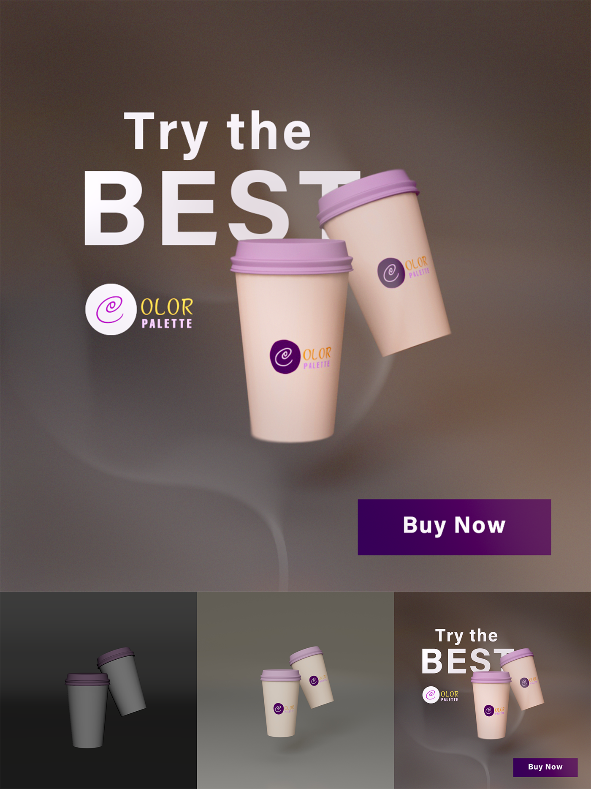
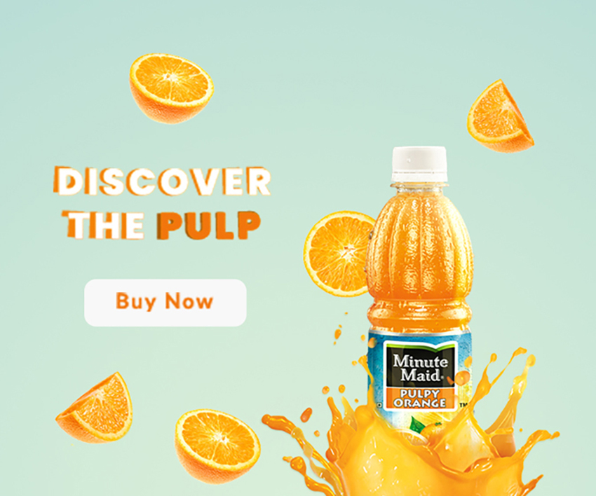

UI/UX Prototype & Design
End-to-end user experience workflow, high-fidelity wireframing, and interactive prototyping built to solve complex interface challenges with modern usability standards.
View Case Study →
End-to-end user experience workflow, high-fidelity wireframing, and interactive prototyping built to solve complex interface challenges with modern usability standards.
View Case Study →
Comprehensive digital product and packaging mockup workflows showcasing precise brand realization, material textures, and realistic environmental rendering.
View Case Study →
High-impact visual advertising and social media marketing graphics crafted for food & beverage branding, emphasizing vibrant color contrast and bold typography.
View Case Study →
Conversion-focused promotional banner suites and display advertising campaigns optimized across multiple web screen resolutions and digital marketing channels.
View Case Study →Senior UI/UX & Product Designer spearheading enterprise SaaS real estate platform UX — interactive community maps, property search, and dynamic digital floor plans with AI-assisted map generation.
Senior UI/UX & Product DesignerLed visual design strategy for high-profile client campaigns across WordPress and AEM. Achieved 100% Quality Award for zero design-to-build regression faults.
Senior Visual & UI DesignerDesigned immersive 3D architectural visualizations and brand collateral. Featured in the Times of India for a high-profile tourism visualization project.
Multimedia / 3D & Graphic ArtistResults-driven UI/UX, Product, and Web Designer with 7+ years of end-to-end design experience. Specialized in transforming complex business requirements into intuitive, pixel-perfect digital interfaces.
Expertise spans interactive SaaS environments, vector-based geospatial mapping, responsive web layouts, and comprehensive UI design systems. Adept at DesignOps and workflow automation — integrating AI tools (Abacus AI) and scripting extensions into Agile Scrum lifecycles.
2024 / 2025
Honored for automated SVG mapping extensions and time-reduction workflows.
Q3 2023 · MediaMint
Awarded for consistent operational delivery and design excellence.
Q2 2021
Recognized for communication transparency, adaptability, and visual quality.
Multiple
Achieved project KPIs with absolute processing precision and zero regression errors.
Feel free to reach out any time. I prefer email, especially since we may be a few time zones away.